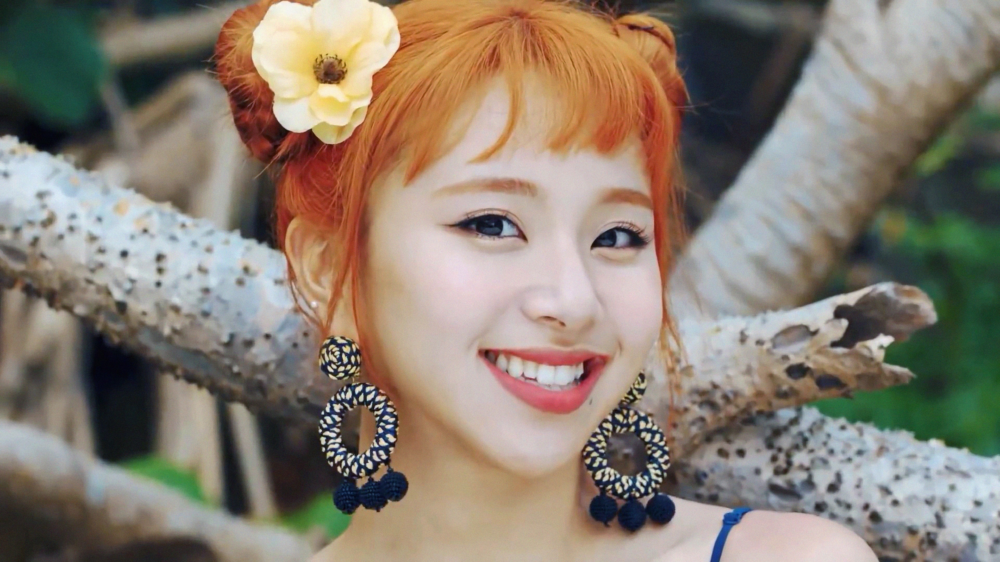

Biodata Umum

Nama panggung: Chaeyoung
Nama Lengkap: Son Chae Young
Tempat lahir: Seoul, Korea Selatan
Tanggal lahir: 23 April 1999
Golongan darah: B
Memiliki sembilan anggota, girl group TWICE beranggotakan para member yang punya segudang talenta. Salah satunya adalah Chaeyoung. Gak cuma jago olah vokal, ia juga berbakat dalam menulis lagu, lho.
Nama panggung: Chaeyoung
Nama Lengkap: Son Chae Young
Tempat lahir: Seoul, Korea Selatan
Tanggal lahir: 23 April 1999
Golongan darah: B
Chaeyoung lulus audisi JYP Entertainment pada 2012 saat usianya masih 13 tahun. Sebelum itu, ia juga pernah ikut kelas tari selama setahun ketika kelas 6 SD, karena cita-citanya ingin menjadi penyanyi idola.
Selama menjalani trainee, Chaeyoung sempat menjadi model MV untuk lagu "Stop Stop It" dari GOT7 pada 2014. Ia juga membintangi MV lagu "Only You" dari Miss A di tahun 2015.
Chaeyoung debut bersama TWICE setelah mengikuti program survival Sixteen yang diselenggarakan JYP Entertainment dan Mnet pada 2015. Ia termasuk salah satu idol yang debut di usia termuda, yakni 16 tahun.
Bersama TWICE, Chaeyoung sudah merilis banyak lagu. Tahun ini, TWICE merilis full album, mini album, dan single terbaru. Selain menyanyi, Chaeyoung juga menulis lirik untuk beberapa lagu yang dinyanyikan grupnya.
Seperti member TWICE lainnya, Chaeyoung turut berpartisipasi dalam Melody Project, yakni side-project untuk menunjukkan kemampuan individual setiap member. Ia sudah beberapa kali ikut Melody Project, yang terbaru 22 Oktober 2021 di mana ia meng-cover lagu "Off My Face" dari Justin Bieber.
Sebagai Penulis Lagu:
Membintangi MV idol JYPE lain:
Chaeyoung bersama TWICE berhasil meraih banyak penghargaan, termasuk penghargaan utama atau Daesang. Bahkan, TWICE adalah salah satu girl group yang sukses meraih Daesang terbanyak. Beberapa di antaranya adalah sebagai berikut: